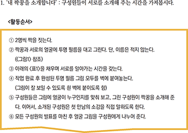
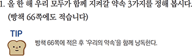
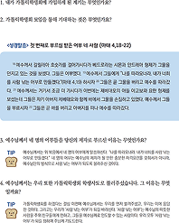

STEP 01 관찰
자신을 비롯한 내 주변에 어떤 일들이 일어나는지 주의 깊게 바라봅니다.
교재 ‘빵’은 사회적으로 중요한 것들을 주제로 하여 자신의 생각을 정리해보고, 다른 사람들과 의견을 나누면서 생각의 깊이를 넓힐 수 있도록 돕고자 합니다. 또한 학생들이 복음적으로 세상을 바라보고 판단하고 행동할 수 있도록 방향성을 제시해주고자 합니다.
교재 ‘빵’은 가톨릭학생회의 ROL 방법론에 따라 다음과 같이 구성되어 있습니다.
ROL(Review of Life)
생활(Life)을 반성(Review)하는 것입니다.살아가면서 보고 듣고 느끼고 행동하는 모든 것들
자신을 포함한 주변의 일들을 찬찬히, 깊이, 새로이 되돌아보는 것
일상 속 사건들의 의미를 찾아가는 과정
ROL는 총 세 가지 스텝으로 구성되어 있습니다.


